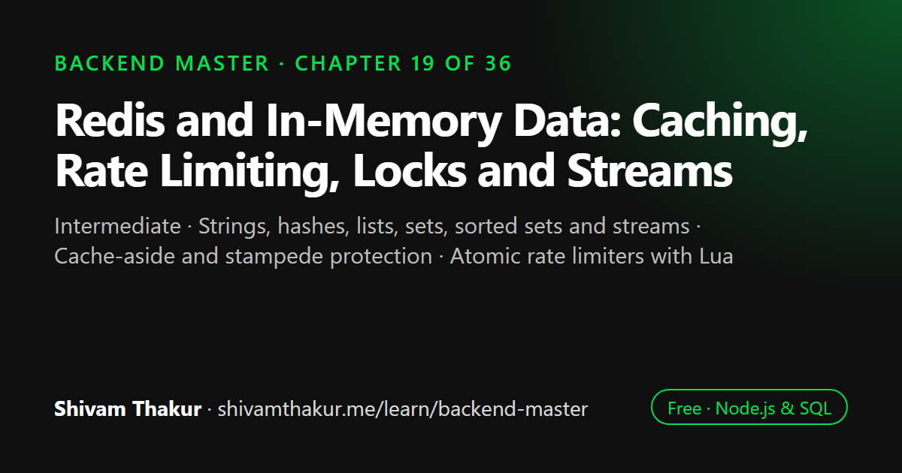

Chapter 19 of 36 · Intermediate
Redis and In-Memory Data: Caching, Rate Limiting, Locks and Streams
Redis and In-Memory Data — Speed, Structures, and Sharp Edges

Redis is an in-memory data-structure server that is fast because it is single-threaded and keeps data in RAM. This chapter covers its data structures, cache-aside with stampede protection, atomic rate limiting with Lua, safe distributed locks, pub/sub versus streams, what survives a crash, and eviction, with a tested lab.
In this chapter you will learn
- Strings, hashes, lists, sets, sorted sets and streams
- Cache-aside and stampede protection
- Atomic rate limiters with Lua
- Distributed locks and their limits
- Persistence (RDB and AOF) and eviction policies
19.0 Why This Chapter Matters
A PostgreSQL query that takes 5 ms is fast. A Redis lookup that takes 0.2 ms is 25× faster, and, more importantly, Redis can sustain hundreds of thousands of such operations per second on one core. That makes it the backend engineer's Swiss Army knife:
- a cache in front of slow queries,
- a store for sessions and short-lived tokens,
- atomic counters and rate limiters,
- leaderboards and "top N" lists,
- queues and event streams,
- distributed locks (carefully!),
- pub/sub for real-time fan-out.
But Redis is not "a faster database". It keeps data in memory, executes commands on one thread, and by default may lose recent writes when it crashes. Using it well means knowing those three facts cold. In this chapter you'll see each of them demonstrated on a real Redis 7.2.14 container:
- the data structures and what each is for,
- atomic operations (1,000 concurrent increments, no lost updates),
- cache-aside and the cache stampede (50 requests → 50 database hits) and its fixes,
- rate limiters, including an atomic Lua sliding window,
- distributed locks: why a naive
DELdeletes someone else's lock, - pub/sub vs streams: which one loses messages,
- persistence: what survives
kill -9(we tested it), - eviction when memory is full, and why
KEYS *is dangerous.
19.1 What Redis Is (and Isn't)
Redis is an in-memory data-structure server: a key-value store where the values are rich structures (strings, hashes, lists, sets, sorted sets, streams…), and you manipulate them with atomic commands.
| Property | Consequence |
|---|---|
| In memory | Microsecond reads; capacity limited by RAM; data larger than RAM must be evicted or sharded |
| Single-threaded command execution | Every command is atomic (no two run at once) but a slow command blocks everyone |
| Optional persistence | Not durable by default; you choose snapshots (RDB) and/or an append-only log (AOF) |
| Keys are strings, values have types | You design key names (product:42) yourself |
| Everything over the wire is text-ish | Numbers come back as strings (we saw typeof … === 'string') |
Redis vs a database vs a cache
- Not a replacement for PostgreSQL/MongoDB for your system of record (orders, payments). A cache can be lost and rebuilt; a source of truth can't.
- A great complement: store a copy or a derived, disposable view (cache, counters, rate limits, sessions, queues) and keep the truth in the database.
- Some uses (queues, streams, sessions) are primary storage for transient data. There you must choose persistence settings consciously (§19.8).
19.2 The Core Structures, With Real Output
Connect from Node (client redis v6):
import { createClient } from 'redis';
const r = createClient({ url: 'redis://127.0.0.1:54331' });
r.on('error', (e) => console.error('redis error', e.message)); // ALWAYS attach: an unhandled 'error' crashes Node
await r.connect();Strings: the workhorse (and the counter)
await r.set('greeting', 'hello', { EX: 2 }); // expires in 2 seconds
await r.get('greeting') // 'hello' — ttl: 2 s
// 2.2 s later: await r.get('greeting') → null
await r.set('lock:a', '1', { NX: true }) // OK ← NX: only set if the key does NOT exist
await r.set('lock:a', '2', { NX: true }) // null ← refusedAtomic counters: 1,000 concurrent INCRs on one key:
await Promise.all(Array.from({ length: 1000 }, () => r.incr('visits')));
await r.get('visits') // '1000'1000 concurrent INCR -> 1000 type surprise: everything is a string: stringExactly 1,000: no lost updates, because INCR is one atomic command executed by a single thread. That's the same "make it one atomic step" principle as Chapter 16, delivered for free. (And note the value comes back as the string '1000'; convert with Number().)
Hashes: an object under one key
await r.hSet('product:1', { name: 'Notebook A5', price_minor: '12000', stock: '50' });
await r.hIncrBy('product:1', 'stock', -3);
await r.hGetAll('product:1') // { name: 'Notebook A5', price_minor: '12000', stock: '47' }Use hashes for small objects where you update fields individually (HINCRBY an inventory count) without rewriting the whole blob.
Lists: queues and stacks
await r.lPush('queue:emails', ['e1', 'e2', 'e3']);
await r.rPop('queue:emails') // 'e1' then 'e2' → FIFO (push left, pop right)LPUSH+RPOP is a queue; BRPOP blocks until an item arrives (a worker loop). Simple, but if a worker pops a job and crashes, the job is gone; for reliable queues use streams (§19.6) or Chapter 28's queue systems.
Sets: unique members and set algebra
await r.sAdd('tags:1', ['paper', 'school']); await r.sAdd('tags:2', ['writing', 'school']);
await r.sInter(['tags:1', 'tags:2']) // [ 'school' ]SADD (dedupe), SISMEMBER (membership), SINTER/SUNION/SDIFF (set algebra, e.g., "users who bought A and B").
Sorted sets: leaderboards and ranges
await r.zAdd('best_sellers', [{ score: 150, value: 'Backpack' }, { score: 320, value: 'Gel Pen' }, { score: 90, value: 'Compass' }]);
await r.zIncrBy('best_sellers', 40, 'Compass');
await r.zRangeWithScores('best_sellers', 0, 1, { REV: true })
// [ { value: 'Gel Pen', score: 320 }, { value: 'Backpack', score: 150 } ] ← top 2
await r.zRevRank('best_sellers', 'Backpack') // 1 (0-based rank)A sorted set keeps members ordered by a score, so "top N", "rank of X" and "everything between score A and B" are logarithmic operations. It is the right structure for leaderboards, time-ordered feeds (score = timestamp) and sliding-window rate limits (§19.4).
HyperLogLog: count distinct things in 12 KB
for (let i = 0; i < 10000; i++) await r.pfAdd('uniq:2026-11-12', 'user' + (i % 4000));
await r.pfCount('uniq:2026-11-12') // 4006 (true distinct count: 4000)
await r.memoryUsage('uniq:2026-11-12') // 14400 bytesA probabilistic structure: ~0.8% error (we saw 0.15%) in about 12 KB whether you count 4 thousand or 4 billion distinct users. "Unique visitors per day" without storing every id.
Other structures worth knowing
Streams (§19.6), bitmaps (daily-active flags, 1 bit per user), geo commands, JSON/Search/Vector via Redis Stack modules (not run here).
The key naming convention
Colon-separated namespaces: object-type:id:field: product:42, session:abc123, rl:ip:1.2.3.4, cache:product:7. Keep keys short but readable; always give transient keys a TTL.
19.3 Caching: Cache-Aside and Its Dangers
Cache-aside (a.k.a. lazy loading) is the default pattern:
read(id):
value = redis.get(key)
if value: return value ← cache HIT
value = database.load(id) ← cache MISS: go to the source of truth
redis.set(key, value, EX ttl) ← fill the cache
return value
write(id, newValue):
database.update(id, newValue)
redis.del(key) ← invalidate; next read refillsWe simulated a database call as a 200 ms function:
miss 213 ms (DB) vs hit 2.0 ms (Redis)The cache stampede (thundering herd)
When a popular key expires, every request arriving in the next 200 ms misses, and every one of them hits the database at once. Fifty concurrent requests for a cold key:
50 concurrent requests for a cold key -> DB calls: 50 <- cache stampedeAll 50 ran the slow query, even though one would have done. On a busy site this is how an expired key takes the database down, which then makes the next misses slower, and so on.
Fix 1: single-flight (within one process). The first caller starts the load; others await the same promise:
const inflight = new Map();
function getProduct(id) {
const key = 'cache:product:' + id;
if (inflight.has(key)) return inflight.get(key); // join the load already in progress
const p = (async () => { /* get → miss → load → set */ })().finally(() => inflight.delete(key));
inflight.set(key, p); return p;
}
// 50 concurrent requests → DB calls: 1Fix 2: a Redis lock (works across many app servers). Only the holder of SET lock NX PX 2000 loads; the rest wait briefly and re-check the cache:
with Redis lock (works across servers) -> DB calls: 1Fix 3: TTL jitter. If you cache 10,000 products all with a TTL of exactly 300 s, they all expire at the same instant. Add randomness: 300 + random(0..60) (we generated 316, 350, 323, 303, 346). Also consider refreshing early (probabilistic early expiry) and negative caching (cache "not found" briefly so missing ids don't hammer the DB).
The hardest part: invalidation
"There are only two hard things in computer science: cache invalidation and naming things." (Phil Karlton)
| Strategy | How | Trade-off |
|---|---|---|
| TTL only | Let it expire | Simple; data may be stale up to TTL |
| Delete on write | DEL key after the DB commit |
Race: a concurrent reader may re-cache the old value between your write and delete |
| Write-through | Update DB and cache together | Two writes to keep consistent; a failure between them leaves a mismatch |
| Event-driven | Publish changes; subscribers refresh | More moving parts, but scales |
Cache after the database commit, never inside the transaction; and treat the cache as disposable: the system must still be correct if Redis is empty. More patterns (HTTP caching, CDN, multi-level caches) in Chapter 27.
19.4 Atomic Rate Limiting
Chapter 7 used express-rate-limit; here is what happens underneath.
Fixed window: INCR + EXPIRE
async function allow(key, limit, windowSec) {
const n = await r.incr(key);
if (n === 1) await r.expire(key, windowSec); // first hit starts the window
return n <= limit;
}
// 15 requests, limit 10: ok ok ok ok ok ok ok ok ok ok X X X X X | ttl 60Correct, cheap, and good enough for many uses. Two weaknesses:
- Burstiness at window edges: 10 requests at 11:59:59 and 10 more at 12:00:00 = 20 in two seconds.
- Not atomic: if the process dies between
INCRandEXPIRE, the key never expires and that client is blocked forever. The fix is to make both steps one atomic unit, which is what Lua scripts are for.
Sliding window with a sorted set + Lua
Redis runs a Lua script atomically (nothing else interleaves), so multi-step logic becomes race-free:
local key, now, window, limit = KEYS[1], tonumber(ARGV[1]), tonumber(ARGV[2]), tonumber(ARGV[3])
redis.call('ZREMRANGEBYSCORE', key, 0, now - window) -- drop entries older than the window
if redis.call('ZCARD', key) < limit then
redis.call('ZADD', key, now, now .. '-' .. ARGV[4]) -- record this request
redis.call('PEXPIRE', key, window); return 1 -- allowed
end
return 0 -- limitedconst sha = await r.scriptLoad(script);
await r.evalSha(sha, { keys: ['rl:sw'], arguments: [String(Date.now()), '1000', '5', String(i)] });8 requests in 400 ms, limit 5 per 1000 ms: 1 1 1 1 1 0 0 0
after the window slides: 1Five allowed, three refused, then allowed again once old entries aged out: a true sliding window, with no edge bursts, entirely atomic. (Cost: it stores one entry per request, so memory scales with the limit.) Production variants: token bucket and leaky bucket (smooth rates, allow bursts), usually also written as Lua scripts. (I tested the sliding window and the fixed window; token bucket is described, not run.)
Where the limiter key comes from matters (Chapter 23): per IP, per user id, per API key. Behind a proxy, use the real client IP (X-Forwarded-For with trusted-proxy settings), or everyone shares one bucket.
19.5 Distributed Locks (Subtle!)
Sometimes several servers must ensure only one runs a job (generate the nightly report, process one refund). Redis can provide a lock:
await r.set('lock:report', token, { NX: true, PX: 400 }); // acquire: only if absent, auto-expires in 400 msThe expiry (a lease) is essential: if the holder crashes, the lock must free itself. But it creates the classic bug. Our test:
A acquires: OK | B tries: null ← mutual exclusion works
B acquires after A's lease expired: OK ← A was too slow; its lease ran out
A does naive DEL -> deleted 1 key (that was B's lock!) ← A finishes late and releases B's lockNow B's critical section is unprotected, and a third process C could enter while B still runs. The fix: each holder stores a unique token as the value and releases only if the value still matches, atomically (so another client can't take it between the check and the delete):
if redis.call('GET', KEYS[1]) == ARGV[1] then return redis.call('DEL', KEYS[1]) else return 0 endA safe unlock with its token -> 0 (0 = not yours, nothing deleted)What a Redis lock does not guarantee
- If A's lease expires while it's still working, two processes are in the critical section anyway (a "paused" process, say from a long garbage collection, wakes up thinking it still holds the lock). A lock with a timeout can never be a perfect mutual-exclusion guarantee. Martin Kleppmann's essay "How to do distributed locking" explains this at length.
- On failover (replica promoted before it received the lock key) two clients can hold the "same" lock. Redlock (a multi-instance algorithm) tries to address this and is debated.
- Therefore: use locks for efficiency (avoid duplicate work), not for correctness. If correctness matters (don't double-charge, don't oversell), enforce it in the database with constraints, atomic updates or fencing tokens (Chapter 16). Use the lock to reduce wasted work, and the database to guarantee the invariant.
For single-database exclusivity, PostgreSQL's advisory locks (Chapters 14 and 16) are often simpler and safer than Redis locks.
19.6 Pub/Sub vs Streams
Pub/Sub: fire-and-forget
await sub.subscribe('orders:new', (m) => got.push(m));
await r.publish('orders:new', 'order-1');online subscriber received: [ 'order-1' ]
subscriber that joined after publish received: [] <- pub/sub does not store messagesPub/sub delivers to whoever is subscribed right now, and then forgets. A subscriber that was disconnected, restarting or slow simply misses messages. Perfect for ephemeral signals (live notifications to connected clients, cache invalidation broadcasts); wrong for anything you can't afford to lose.
Streams: a durable log with consumer groups
A stream (XADD) is an append-only log; consumer groups let several workers share it, each message going to one worker, with acknowledgements:
await r.xAdd('stream:orders', '*', { orderId: '1' }); // …2, …3
await r.xGroupCreate('stream:orders', 'workers', '0');
const batch1 = await r.xReadGroup('workers', 'w1', { key: 'stream:orders', id: '>' }, { COUNT: 2 });worker w1 reads 2: [ '1', '2' ]
pending (delivered, not acked): 2
worker w2 reads the rest: [ '3' ] | pending now: 1 ← after w1 XACKed its two messagesMessages are stored; a consumer that reads a message but doesn't XACK (because it crashed) leaves it in the pending list, where another worker can claim it (XAUTOCLAIM) and retry. That is at-least-once delivery. (Claiming/retry wasn't exercised in the test.) Streams are Redis's answer to "I need a lightweight message queue." For heavier needs (replays, huge throughput, strict ordering across partitions) Chapter 28 compares Kafka, RabbitMQ and SQS.
| Pub/Sub | List (LPUSH/RPOP) |
Stream | |
|---|---|---|---|
| Stores messages | No | Yes (until popped) | Yes (until trimmed) |
| Multiple consumers each get a copy | Yes | No | Yes (with separate groups) |
| Work sharing among workers | No | Yes | Yes (consumer groups) |
| Survives a worker crash | n/a | No (job popped = gone) | Yes (pending list + ack) |
19.7 The Single-Thread Rule: Don't Block the Server
Commands run one at a time. Fast commands (GET, INCR, HGET: O(1)) are fine. O(N) commands over big collections stall every client. The classic offender is KEYS pattern.
We loaded 200,000 keys and compared:
KEYS bulk:* -> 200000 keys in 354 ms (blocks the whole server meanwhile)
while KEYS ran, another client's PING waited up to 116 ms
SCAN in pages of ~1000 -> 200000 keys in 950 ms (non-blocking)While KEYS ran, an unrelated client's PING, which normally takes under a millisecond, waited 116 ms. On a production instance with millions of keys the freeze is seconds. SCAN cursor MATCH pattern COUNT n iterates in small steps and lets other commands interleave: slower overall, but it never stalls the server. (SCAN may return a key more than once and may miss keys added during the scan, so treat it as best-effort.)
Other things that block: FLUSHALL on a big dataset, huge SMEMBERS/HGETALL/LRANGE 0 -1 on million-element collections (use SSCAN/HSCAN, or paginate), very slow Lua scripts, very large values (a 100 MB string), and SORT/big set operations. Find slow commands with SLOWLOG GET and redis-cli --bigkeys. (SLOWLOG not run here.)
Pipelining and transactions
Each command is a network round trip (~0.2–2 ms). To send many, pipeline them. We loaded 200,000 keys with r.multi() (queued, then sent together) in one go; I did not time it against 200,000 individually awaited calls, but each of those would pay a full network round trip (the effect Chapter 15 measured for N+1). MULTI/EXEC groups commands to run atomically in sequence (but unlike SQL, there's no rollback if one fails, and no reads between commands that depend on each other: use Lua for that, or WATCH for optimistic locking).
19.8 Persistence: What Survives a Crash?
Redis offers two mechanisms:
- RDB snapshots: a compact point-in-time dump written periodically (default: after
3600 s & 1 change,300 s & 100 changes, or60 s & 10000 changes). - AOF (append-only file): logs every write; with
appendfsync everysec(the usual setting) you can lose about one second of writes.
Test: two containers, one with the default config, one started with --appendonly yes. In each we SET order:1 paid, waited 2 s, then docker kill (a hard kill, like a power loss), restarted, and read the key:
default config: save 3600 1 300 100 60 10000 appendonly no
AOF config: save 3600 1 300 100 60 10000 appendonly yes
default after kill -9: order:1 = [] dbsize=0 ← DATA LOST
AOF after kill -9: order:1 = [paid] dbsize=1 ← survived
--- graceful shutdown of default saves a snapshot:
default after graceful stop/start: order:2 = [shipped] ← a clean stop writes a final RDBThe default Redis would have snapshot after an hour (1 change) — and we killed it at ~5 s. Everything written since the last snapshot is lost on a crash. Fine for a cache; not fine if Redis holds your only copy of sessions or queued jobs.
| Setting | Durability | Cost |
|---|---|---|
| None / RDB only | Lose everything since the last snapshot | Fastest, smallest |
appendonly yes + everysec |
Lose ≤ ~1 s | Small write overhead |
appendfsync always |
Lose ~nothing | Much slower writes |
(Not tested: AOF rewrite, mixed RDB+AOF, replication, and managed-service durability. Check your provider's guarantees.) Rule: decide what happens if Redis restarts empty. If the answer is "the app rebuilds the cache from the database," you're fine. If it's "we lose orders," you chose the wrong store.
19.9 Memory and Eviction
RAM is finite. maxmemory sets a cap; maxmemory-policy decides what happens at the cap. Test: cap = 3 MB, writing 20,000 keys of 200 bytes each:
noeviction writes accepted: 3892 | keys in DB: 3892 | evicted: 0 | error: OOM command not allowed when used memory > 'maxmemory'.
allkeys-lru writes accepted: 20000 | keys in DB: 3891 | evicted: 16109noeviction: writes start failing withOOMonce memory is full. Right for a primary store/queue where you must not silently drop data; wrong for a cache (your app will start erroring).allkeys-lru: Redis evicts the least recently used keys to make room: all 20,000 writes succeeded, while only ~3,900 remain. That's the standard policy for a cache.- Others:
allkeys-lfu(least frequently used),volatile-*(evict only keys that have a TTL),*-random,volatile-ttl.
Practical rules: a cache instance uses allkeys-lru/lfu with a maxmemory; keep caches and durable data on separate instances (so an eviction policy meant for one doesn't delete the other); give every cache key a TTL; watch used_memory, evicted_keys and the hit rate (keyspace_hits / (hits + misses)).
19.10 Scaling and High Availability (Concepts)
(Described from documentation; not run in this chapter.)
| Mechanism | What it gives | Remember |
|---|---|---|
| Replication (primary → replicas) | Read scaling, a hot standby | Asynchronous: a failover can lose the last writes |
| Sentinel | Automatic failover for a primary/replica set | Clients must be Sentinel-aware |
| Redis Cluster | Shards keys across nodes (16,384 hash slots) | Multi-key operations/Lua must stay in one slot (use {hash tags}) |
| Managed services (ElastiCache, Upstash, Redis Cloud, Memorystore) | Ops handled for you | Check persistence/failover/eviction defaults |
Security basics
Redis was designed for trusted networks. Never expose it to the internet (many breaches started with an open port 6379). Bind to private interfaces, set a strong requirepass/ACL users, enable TLS across networks, and rename/disable dangerous commands (FLUSHALL, CONFIG) for application users. (Our test containers were bound to 127.0.0.1 only.)
19.11 ShopLine with Redis
| Need | Redis feature | Notes |
|---|---|---|
| Cache product pages | cache:product:{id} strings, TTL 5 min + jitter, delete on update |
Stampede protection on hot items |
| Sessions / refresh tokens | session:{id} hash/string with TTL |
Decide durability (§19.8) |
| Rate limiting login & API | Lua sliding window per IP/user | Chapter 23 |
| Best sellers | Sorted set ZINCRBY per sale, ZREVRANGE 0 9 |
Rebuildable from SQL |
| Daily unique visitors | HyperLogLog | ~1% error |
| Cart (anonymous) | Hash cart:{id} with TTL |
Move to DB at checkout |
| Background jobs | Stream + consumer group (or BullMQ, Ch 28) | At-least-once; idempotent handlers |
| "Only one cron runner" | SET NX PX + token (efficiency only) |
Or Postgres advisory lock |
| Live order-status push | Pub/sub → SSE/WebSocket (Ch 10) | Lossy: also persist state |
A repository-style cache wrapper (Chapter 11's pattern keeps Redis behind an interface):
export function cached(redis, { ttl = 300, jitter = 60 } = {}) {
const inflight = new Map();
return async function get(key, load) {
const hit = await redis.get(key);
if (hit !== null) return JSON.parse(hit);
if (inflight.has(key)) return inflight.get(key); // single-flight
const p = (async () => {
const value = await load();
if (value !== undefined) await redis.set(key, JSON.stringify(value), { EX: ttl + Math.floor(Math.random() * jitter) });
return value;
})().finally(() => inflight.delete(key));
inflight.set(key, p);
return p;
};
}(This wrapper combines the tested single-flight and jitter ideas from §19.3; the wrapper itself, as written, was not run.) Always make the app degrade gracefully when Redis is down: catch errors, log, and fall back to the database (a cache outage must not become a site outage).
19.12 Edge Cases and Gotchas Checklist
- Treating Redis as the only copy of important data without enabling/understanding persistence.
- Default persistence +
kill -9/crash = lost writes. - No
maxmemory/eviction policy on a cache → OOM or swapping. - Caches without TTLs (memory grows forever).
-
KEYS *(or any O(N) command) in production; useSCAN. - Huge keys/values; unbounded lists and sets.
- Cache stampede on hot keys; synchronized TTLs.
- Caching inside a DB transaction, or caching before commit.
-
INCRthenEXPIREas two steps (use Lua/atomic). - Lock release without checking the token; lock without an expiry.
- Relying on a Redis lock for correctness (use DB constraints).
- Pub/sub for messages that must not be lost.
- Forgetting
XACK(pending list grows) or never trimming streams. - Not attaching the
'error'handler to the client; no reconnect/backoff strategy. - Assuming numbers come back as numbers (they're strings).
- Multi-key operations in Cluster across slots.
- Exposing port 6379 publicly; no auth.
- App crashes when Redis is unavailable instead of falling back.
19.13 Chapter Summary
- Redis is an in-memory, single-threaded data-structure server: very fast, every command atomic, durability optional.
- Structures: strings (and atomic counters: 1,000 concurrent
INCR→ exactly 1000), hashes, lists, sets, sorted sets (leaderboards), HyperLogLog, streams. Values return as strings. - Cache-aside is the default; the stampede turned 50 concurrent misses into 50 DB queries; single-flight / a Redis lock reduced it to 1; add TTL jitter. Invalidation is the hard part.
- Rate limiting: fixed window (
INCR+EXPIRE) has edge bursts and a non-atomic gap; a Lua sliding window is atomic and exact (5 allowed, 3 refused, then allowed again). - Distributed locks:
SET NX PX+ unique token + atomic compare-and-delete; a naiveDELdeleted another client's lock. A lock is for efficiency, not correctness: enforce invariants in the database. - Pub/sub loses messages for absent subscribers; streams + consumer groups persist, track pending, and ack.
- Don't block:
KEYSon 200k keys froze other clients for ~116 ms; useSCAN, pipelines and Lua. - Persistence: default config lost the key on
kill -9;appendonly yeskept it; a graceful stop saves a snapshot. - Eviction:
noevictionfails writes with OOM;allkeys-lruevicted ~16k of 20k keys and kept serving. Cache and durable data belong on separate instances. - Secure it (private network, auth, TLS) and degrade gracefully when it's down.
19.14 Revision Notes
SET k v EX s NX;INCR/INCRBY;HSET/HINCRBY;LPUSH/RPOP/BRPOP;SADD/SINTER;ZADD/ZINCRBY/ZRANGE REV/ZREVRANK;PFADD/PFCOUNT;XADD/XREADGROUP/XACK.- Cache-aside + TTL jitter + single-flight/lock; invalidate after DB commit.
- Atomic multi-step = Lua (
EVAL/EVALSHA) orMULTI(no rollback). - Lock =
SET NX PX token; release = Lua compare-and-delete; use for efficiency only. - Pub/sub = lossy; Streams = durable with ack.
- Avoid
KEYS; useSCAN. Watch big keys; useSLOWLOG. - Persistence: RDB (snapshots), AOF (
everysec≈ lose 1 s); default can lose everything since the last snapshot. - Eviction:
noeviction(store) vsallkeys-lru/lfu(cache); setmaxmemory. - Private network + auth + TLS; fall back to the DB if Redis is down.
19.15 Mind Map (ASCII)
REDIS
│
┌───────────┬──────────┬─────────┼──────────┬───────────────┬────────────┐
STRUCTURES PATTERNS ATOMICITY MESSAGING PERSISTENCE MEMORY OPERATIONS
│ │ │ │ │ │ │
string/hash cache-aside INCR/Lua pub/sub RDB / AOF maxmemory KEYS vs SCAN
list/set stampede sliding streams kill -9 test eviction pipelining
zset/HLL rate limit window consumer everysec LRU/LFU SLOWLOG
streams locks+token MULTI groups lose data? TTLs security/ACL
XACK HA: replica/cluster19.16 Cheat Sheet
await r.set(k, v, { EX: 300, NX: true }); await r.get(k); await r.del(k); await r.expire(k, 60); await r.ttl(k);
await r.incr(k); await r.incrBy(k, 5); await r.hSet(k, {a:'1'}); await r.hIncrBy(k,'a',1); await r.hGetAll(k);
await r.lPush(k, ['a']); await r.rPop(k); await r.sAdd(k, ['a']); await r.sInter([k1,k2]);
await r.zAdd(k, [{score:1,value:'a'}]); await r.zRangeWithScores(k, 0, 9, { REV: true });
await r.pfAdd(k, id); await r.pfCount(k);
await r.xAdd(k, '*', {f:'v'}); await r.xGroupCreate(k, g, '0'); await r.xReadGroup(g, c, {key:k,id:'>'}, {COUNT:10}); await r.xAck(k, g, ids);
await r.eval(luaSrc, { keys:[…], arguments:[…] }); // atomic multi-step
// lock: SET key token NX PX ttl · unlock: Lua if GET==token then DEL
// cache: GET → miss → load → SET EX ttl+jitter · never KEYS *, use SCAN
// config: maxmemory 256mb; maxmemory-policy allkeys-lru; appendonly yes; requirepass …19.17 Key Takeaways
- Redis is fast because it's in RAM and single-threaded. Respect both.
- Every command is atomic: build counters, limiters and locks from atoms (and Lua).
- A cache is disposable: add TTLs, stampede protection, and graceful fallback.
- Locks are for efficiency; the database guarantees correctness.
- Know your durability: the default can lose everything since the last snapshot.
- Use
SCAN, notKEYS; use streams, not pub/sub, when messages matter.
19.18 20 Multiple Choice Questions
Tap an answer to check it. Your score updates as you go.
Score: 0 / 0 answered (20 questions)
Why are Redis commands atomic?
1,000 concurrent
INCRcalls result in:The value returned by
GET visitsin Node is:The best structure for a top-N leaderboard is:
HyperLogLog is used to:
In cache-aside, on a miss you:
A cache stampede is:
Which does NOT mitigate a stampede?
Why is
INCRthenEXPIRErisky?A Lua script in Redis runs:
A safe lock release requires:
Why did the naive
DELin our lock test cause harm?Redis locks are best used for:
A subscriber that connects after a
PUBLISHreceives:In streams, a message read but not
XACKed stays in:KEYS bulk:*on 200k keys:With default config,
docker killshortly afterSETresults in:AOF with
appendfsync everysecrisks losing roughly:For a cache instance at its memory limit, the right policy is typically:
Which is the best protection for Redis in production?
Show the answer key
1-b, 2-b, 3-b, 4-b, 5-b, 6-b, 7-b, 8-d, 9-b, 10-b, 11-b, 12-b, 13-b, 14-b, 15-b, 16-b, 17-b, 18-b, 19-b, 20-b
19.19 20 Hands-on Exercises
(Start the container from resources/ch19/README.txt. These labs call FLUSHALL; use a throwaway instance.)
Easy
- Use
redis-cli(viadocker exec) toSET/GETwithEX, and watchTTLcount down. - Count to 1,000 with 1,000 concurrent
INCRs from Node; compare with a read-modify-write version. - Store a product as a hash;
HINCRBYits stock. - Build a best-sellers sorted set; fetch the top 3 and the rank of one item.
- Use
SADD/SINTERto find users who bought both products A and B.
Medium
- Implement cache-aside around a slow function; measure miss vs hit latency.
- Reproduce the stampede (50 concurrent cold-key requests); fix it with single-flight, then with a Redis lock.
- Implement the fixed-window limiter; demonstrate the edge burst, then fix with the Lua sliding window.
- Add TTL jitter to a cache and chart expiry times for 1,000 keys.
- Build a work queue with a stream and a consumer group; run two workers and verify each message is processed once.
- Kill a worker after reading but before
XACK; useXAUTOCLAIMto reassign the message. - Show that pub/sub loses messages for a late subscriber; build the same flow with a stream.
Hard
- Implement the safe lock (token + Lua unlock) as a library with tests, including the "expired lease" scenario.
- Demonstrate a lock's limitation: pause process A (simulate GC) past its lease and show two holders; then add a fencing token check in the database to make it safe.
- Reproduce the persistence test with RDB-only, AOF
everysecand AOFalways; measure write throughput of each. - Load 1M keys; compare
KEYSandSCANimpact on a concurrent latency probe; find big keys with--bigkeys. - Configure
maxmemory+allkeys-lruvsallkeys-lfu; replay a skewed (Zipf) workload and compare hit rates. - Implement a token-bucket limiter in Lua with burst and refill rate; test with a precise clock.
- Make an Express middleware that caches GET responses in Redis, with stampede protection,
Cache-Control/ETag integration, and graceful fallback when Redis is stopped. - Build ShopLine's "best sellers" and "daily uniques" features, backed by Redis but rebuilt from PostgreSQL on startup (the cache is disposable).
19.20 5 Interview Questions
1. Why is Redis fast, and what are the consequences of its design?
Model answer: Data lives in memory and commands run on a single thread with an event loop, so there's no lock contention and each operation is microseconds. Consequences: every command is atomic (great for counters/limiters), but slow O(N) commands (KEYS, huge SMEMBERS) block all clients; capacity is bounded by RAM (needs eviction/sharding); durability is optional and must be configured.
2. Explain cache-aside and how you prevent a cache stampede. Model answer: Read the cache; on a miss load from the DB and set with a TTL; on writes update the DB then invalidate the key. A stampede occurs when a hot key expires and many requests miss at once. Mitigate with single-flight or a rebuild lock so one request loads, TTL jitter so keys don't expire together, early/background refresh, and negative caching. The cache must be disposable and the app must work when it's down.
3. How would you implement a rate limiter with Redis?
Model answer: Fixed window: INCR a key per client+window and set EXPIRE on the first hit: simple but bursty at boundaries and non-atomic. Better: a Lua script implementing a sliding window (sorted set of timestamps, trim old, count, add) or a token bucket, executed atomically. Choose the key (IP/user/API key), return 429 with Retry-After, and fail open or closed deliberately if Redis is unavailable.
4. Can you use Redis for distributed locking? What are the pitfalls?
Model answer: SET key token NX PX ttl to acquire, Lua compare-and-delete to release. Pitfalls: lease expiry while the holder is still working (two holders), releasing someone else's lock without a token check, failover losing the lock key. So use it for efficiency (avoiding duplicate work); enforce correctness in the database with constraints, atomic updates, or fencing tokens.
5. Pub/sub vs streams vs lists for messaging? Model answer: Pub/sub: fire-and-forget fan-out to current subscribers, no storage, can lose messages. Lists: simple queue, a popped job is lost if the worker crashes. Streams: durable append-only log with consumer groups, acknowledgements and a pending list for retry (at-least-once), which is the right Redis primitive for work queues; for large-scale or replayable messaging, use Kafka/RabbitMQ/SQS (Ch 28).
19.21 3 Real Projects
Project 1: Cache Layer with Metrics (beginner–intermediate, ~6 hours). Add a cache-aside layer to the ShopLine product API using the wrapper from §19.11, with hit/miss counters, TTL jitter, single-flight, invalidation on update, and graceful fallback. Load-test with and without it; report p50/p99 and DB queries per second.
Project 2: Rate Limiter Service (intermediate, ~8 hours).
Build a reusable limiter library with fixed window, sliding window and token bucket (Lua), per-route configs, standard RateLimit-* headers, and fail-open/fail-closed options. Property-test it against a reference model and run a distributed test across multiple Node processes.
Project 3: Reliable Job Queue on Streams (intermediate–advanced, ~12 hours).
Implement producers, consumer groups, retries with backoff, a dead-letter stream, XAUTOCLAIM for crashed workers, idempotent handlers and metrics (lag, pending age). Chaos-test by killing workers and Redis (with AOF), and prove at-least-once with no permanent loss.
19.22 Further Reading
- Redis documentation: data types,
SEToptions, Lua scripting, Streams, Persistence, Eviction, Security, and the Command reference (check complexity notes). - Redis in Action (Josiah Carlson) and the "Redis University" free courses (RU101/RU102JS).
- Martin Kleppmann, How to do distributed locking; Salvatore Sanfilippo's reply on Redlock.
- Designing Data-Intensive Applications, Chapter 11 (stream processing) and the caching discussions.
- Libraries:
ioredis,node-redis, BullMQ (queues on Redis),rate-limiter-flexible.
Up next → Chapter 20: Other Data Stores and Choosing the Right One
Search engines (Elasticsearch/OpenSearch, and PostgreSQL full-text), columnar/OLAP stores, time-series databases, graph databases, object storage and file uploads (S3-style), message logs, and a practical decision framework for polyglot persistence, with the parts we can run locally tested for real.
Redis: frequently asked questions
Is Redis durable?
Not by default. With the default configuration a hard kill lost our data; enabling AOF (appendonly yes) kept it. Decide what happens if Redis restarts empty.
What is a cache stampede?
When a popular key expires, many concurrent requests miss at once and all hit the database. In our test 50 concurrent misses caused 50 queries; single-flight reduced it to 1.
Why not use KEYS in production?
KEYS is O(N) and blocks the single-threaded server, delaying every other client. Use SCAN, which iterates in small steps.
Can I use Redis for distributed locking?
Only for efficiency, not correctness. Use SET NX PX with a unique token and a compare-and-delete release, and enforce real invariants in the database.